|
-FILIPOS-
Filipos (Philippi) se localiza
en Krinides.
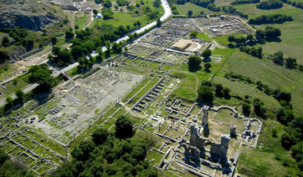
Antigua colonia de los Tasos
llamada Crénides. En el 356 a.e.c. fue conquistada por Filipo II de
Macedonia, padre de Alejandro Magno. En época helena Filipos estaba
amurallada, con teatro, edificios públicos….
|
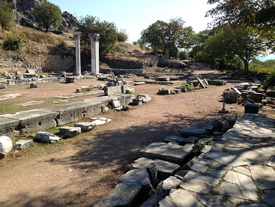 |
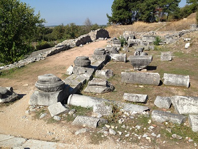 |
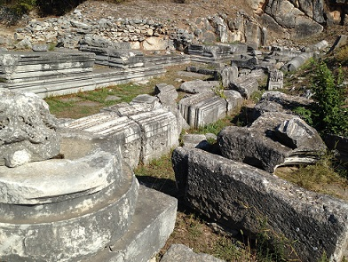 |
Fue conquistada por los
romanos en el 167 a.e.c.
Aquí tuvo lugar la famosa batalla de Filipos. Marco Antonio y
Octavio se enfrentaron a los partidarios de la República, Marco
Junio Bruto y Cayo Casio Longino, en la llanura al oeste de la
ciudad en octubre de 42 a. e.c. Los vencedores, Marco Antonio y
Octavio licenciaron una parte de sus veteranos, probablemente de la
legio XXVIII, los cuales se instalaron en la ciudad, refundada como
colonia romana bajo el nombre de Colonia Victrix Philippensium.
Posteriormente en el 30 a. e.c., Octavio reorganizó la colonia y
procedió a un nuevo licenciamiento de veteranos. La ciudad tomó el
nombre de Colonia Iulia Philippensis, convertido en Colonia Augusta
Iulia Philippensis después de enero de 27 a. e.c., cuando Octavio
recibió él mismo el nombre definitivo del Senado.
De sus monumentos destaca la Acrópolis, el Foro, la Vía Egnatia, el
Teatro, el Mercado, las Termas, las Basílicas y su Museo.
|
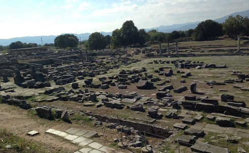 |
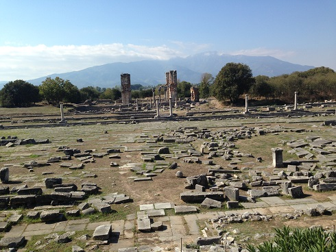 |
|
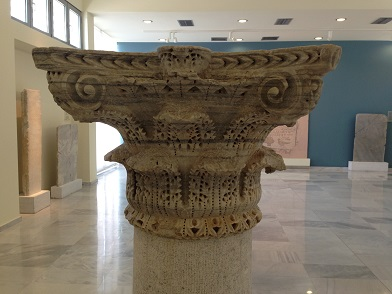 |
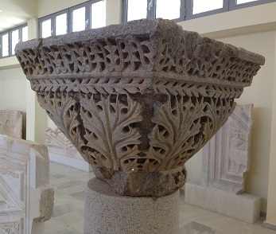 |
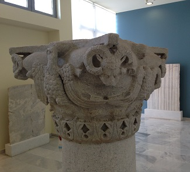 |
La Vía Egnatia del siglo II
a.e.c, discurría desde Roma a Constantinopla.
El Teatro fue construido por
Filipo II. Posteriormente en época romana, siglos II-III, la orquesta
fue derribada y se reconvirtió en un anfiteatro.
|
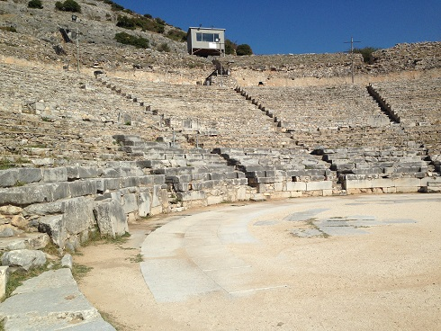 |
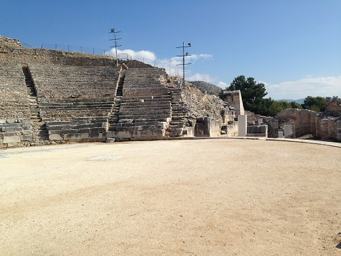 |
Ciudad muy importante para el
cristianismo. Fue visitada posiblemente por el apóstol Pablo (49, 56 y 57).
También destaca el baptisterio de Sta. Lidia.
|